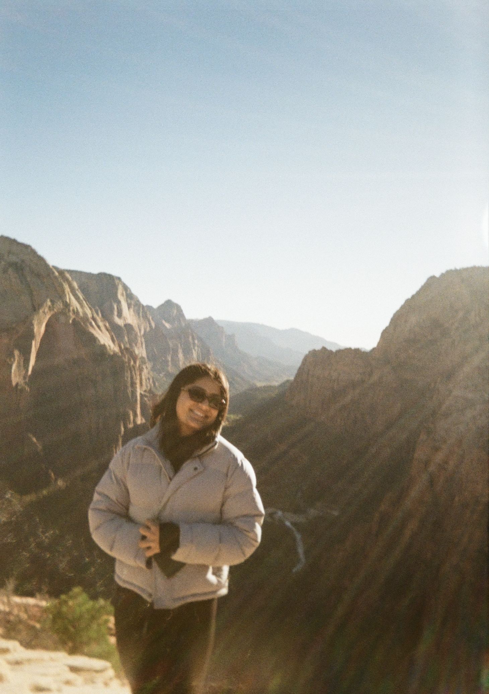
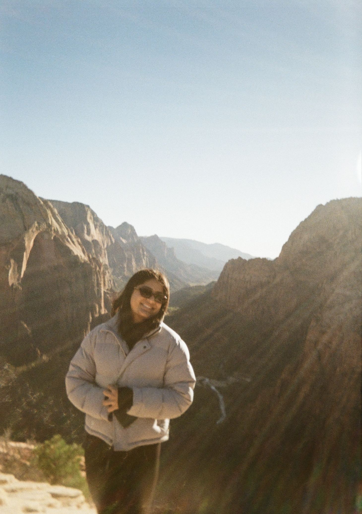

Pranjal Patel
 

Hey, I’m Pranjal Patel. I’m currently pursuing my master’s in Big Data Analytics at SDSU after completing my bachelor’s in Information Systems and Business Analytics at CSU Northridge. Beyond academics, I love exploring new places, whether it is traveling to national parks, wandering through a new city, or just finding a good coffee spot. I have been to some incredible places like Zion and the Grand Canyon, and one of my favorite experiences was hiking Angels Landing, a challenging but unforgettable climb with some of the best views I have ever seen. Music is also a big part of my day, and I am always looking for good playlists or new artists. Whether I am working, driving, or just unwinding, there is always something playing in the background.
I like keeping things balanced, diving into new experiences, meeting interesting people, and enjoying the little things. If you would like to connect, feel free to reach out using the message box below. Always up for a good conversation, whether it is about data, music, travel, or anything in between.